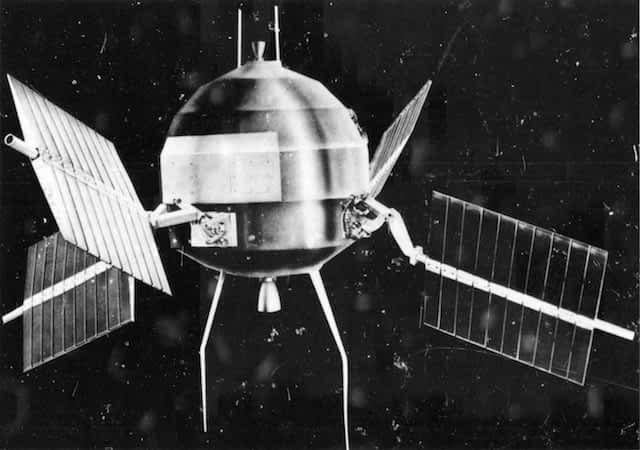
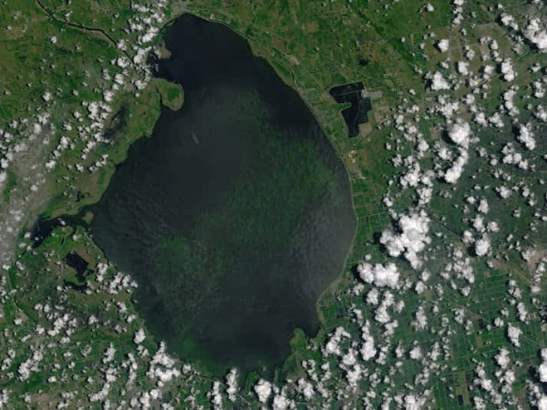

1946 White Sands Missile Range/Applied Physics Laboratory
1946 White Sands Missile Range/Applied Physics Laboratory
Humans have been trying to capture pictures of Earth since the invention of the camera in the 1800s. The earliest aerial photographs were taken from buildings, kites, balloons, and even pigeons. In 1946, scientists launched a camera into space on a V2 rocket.
The camera captured a grainy video, giving the first look at Earth from space. These images marked a major step in exploring beyond Earth and understanding our planet.
The photos showed Earth’s curvature, but not the full circular view. Satellites were later developed to achieve this.
The first imaging satellite was Explorer VI, launched in 1959. It captured blurry images that still didn’t show the full Earth.
This led Stewart Brand to campaign for full images of Earth, asking “Why haven’t we seen a photograph of the whole Earth yet?”
Later that year, a Russian satellite achieved this goal.

Explorer VI spacecraft First images from Explorer VI
First images from Explorer VI
 Molniya satellite, 1966
Molniya satellite, 1966
Color images soon became available with better resolution.
This image was taken in 1967 by a U.S. satellite.
 1967 AST-3/NASA
1967 AST-3/NASA
NASA expanded space exploration, producing iconic images.
In 1972, astronauts captured the Blue Marble image.
This also marked the beginning of the Landsat program.
 1972 Apollo 17/NASA
1972 Apollo 17/NASA
Today thousands of satellites orbit Earth, many used for communication and imaging.


 1972 | Landsat 1
1972 | Landsat 1
First Landsat image.

2016 | Landsat 8Algae bloom.
 1996 | Landsat 5
1996 | Landsat 5
Avalanche captured.
 2017 | ISS
2017 | ISS
Lake view.
 2005 | Terra
2005 | Terra
Ice shelf break.


Satellites allow us to better understand our planet and see it from new perspectives.